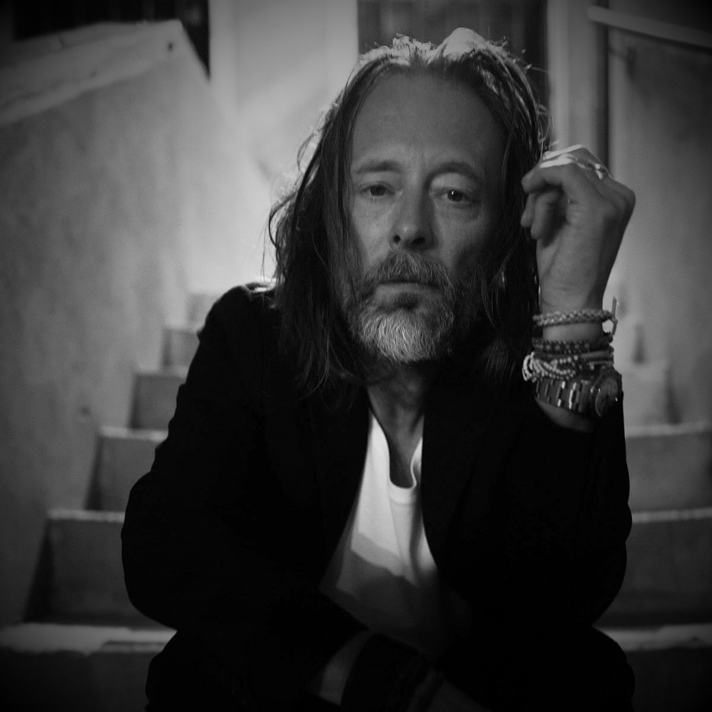

Thom Yorke
Es el vocalista y compositor principal del grupo. Conocido por su voz de falsete, los instrumentos principales que toca son la guitarra y el piano, pero también, el sintetizador, el bajo y la batería.
Es el vocalista y compositor principal del grupo. Conocido por su voz de falsete, los instrumentos principales que toca son la guitarra y el piano, pero también, el sintetizador, el bajo y la batería.
Su rol principal es el de guitarra solista y tecladista. En 2011 la revista Rolling Stone lo situó en el puesto 48º en la Lista de los 100 guitarristas más grandes de todos los tiempos.
Además de tocar la guitarra, usualmente se encarga de la parte vocal, los efectos de sonido y las percusiones. En 2003 la revista Rolling Stone lo situó en la Lista de los 100 guitarristas más grandes de todos los tiempos como el 59º mejor guitarrista.
Hermano de Jonny Greenwood, es el bajista principal de la banda y uno de sus miembros fundadores.
Es el baterista del grupo. Los demás miembros lo han nombrado el "enganche" emocional de la banda, por su tranquilidad. Su musicalidad y talento son partes integrales del sonido del grupo.